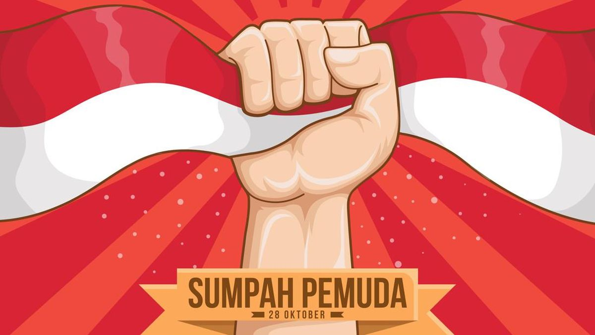

Sumpah Pemuda
Sumpah Pemuda adalah satu tonggak utama dalam sejarah pergerakan kemerdekaan Indonesia. Ikrar ini dianggap sebagai kristalisasi semangat untuk menegaskan cita-cita berdirinya negara Indonesia.
Sumpah Pemuda adalah keputusan Kongres Pemuda Kedua yang diselenggarakan dua hari, 27—28 Oktober 1928 di Batavia (kini bernama Jakarta). Keputusan ini menegaskan cita-cita akan "tanah air Indonesia", "bangsa Indonesia", dan "bahasa Indonesia". Keputusan ini diharapkan menjadi asas bagi setiap perkumpulan kebangsaan Indonesia dan agar disiarkan dalam berbagai surat kabar dan dibacakan di muka rapat perkumpulan-perkumpulan.
Istilah "Sumpah Pemuda" sendiri tidak muncul dalam putusan kongres tersebut, melainkan diberikan setelahnya. Berikut ini adalah bunyi tiga keputusan kongres tersebut sebagaimana tercantum pada prasasti di dinding Museum Sumpah Pemuda. Naskah orisinil diabadikan menggunakan ejaan Van Ophuijsen.
Isi dan Makna Sumpah Pemuda
Pertama:
Kami poetra dan poetri Indonesia, mengakoe bertoempah darah jang satoe, tanah air Indonesia.
Kedoea:
Kami poetra dan poetri Indonesia mengakoe berbangsa jang satoe, bangsa Indonesia.
Ketiga:
Kami poetra dan poetri Indonesia mendjoendjoeng bahasa persatoean, bahasa Indonesia.
Di dalam buku Menguak Misteri Sejarah (2010), Kongres Pemuda II yang menghasilkan Sumpah Pemuda merupakan salah satu tonggak sejarah bangsa Indonesia dalam mengawali kesadaran kebangsaan. Sumpah Pemuda mengajarkan nilai-nilai persatuan bangsa dan membuktikan bahwa perbedaan yang dimiliki bangsa Indonesia ternyata dapat disatukan sebagai perwujudan Bhinneka Tunggal Ika yang berarti “berbeda-beda tetapi tetap satu”.